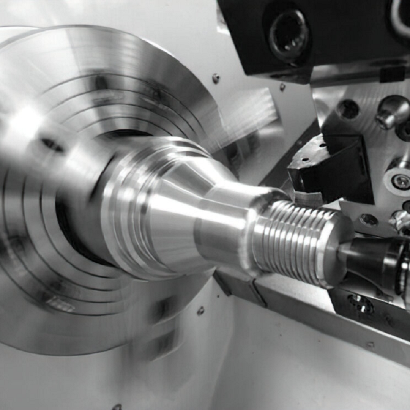

Indexable inserts are a critical component in modern machining and manufacturing, revolutionizing the way tools are utilized for cutting, shaping, and finishing materials. These inserts, also known as replaceable cutting edges, are designed to be mechanically attached to a tool holder, allowing for quick replacement without the need to replace the entire tool. This article explores the fundamentals of indexable inserts, their working principles, advantages, types, and applications.
An indexable insert is a cutting tool that can be removed, rotated, or flipped to present a fresh cutting edge to the workpiece. These inserts are typically made from hard materials such as carbide, ceramic, cermet, or polycrystalline diamond (PCD), ensuring they can withstand the high pressures and temperatures encountered during machining processes.
The primary function of an indexable insert is to provide a sharp, durable cutting edge that can efficiently remove material from a workpiece. They are commonly used in various machining operations including turning, milling, drilling, and threading. The inserts are held in place by tool holders designed with precise clamping mechanisms to ensure stability and accuracy during cutting.
The working principle of indexable inserts revolves around their ability to be indexed or repositioned to use multiple cutting edges. A typical indexable insert has multiple edges, often three to eight, depending on its shape and design. When one edge becomes worn or damaged, the insert can be rotated to a new edge, maximizing the use of the material and reducing downtime.
The tool holder and insert are engineered to provide a secure fit, with the insert seated in a pocket of the holder and clamped firmly in place. This setup ensures that the insert remains stable during machining, preventing movement that could affect precision and surface finish.
The clamping mechanism can vary, but common methods include screws, clamps, and wedges. These mechanisms allow for quick and easy replacement of the insert, minimizing the time required for tool changes and increasing overall productivity.
Cost-Effectiveness: One of the primary advantages of indexable inserts is their cost-effectiveness. Instead of replacing an entire tool, only the worn insert needs to be replaced, significantly reducing tooling costs.
Improved Efficiency: The ability to quickly change inserts without regrinding or resetting the tool improves operational efficiency. This feature is particularly beneficial in high-volume production environments.
Consistency and Precision: Indexable inserts are manufactured to high tolerances, ensuring consistent performance and precision. The use of multiple cutting edges on a single insert also enhances consistency, as each edge is designed to provide the same level of performance.
Versatility: Available in a wide range of geometries and materials, indexable inserts can be tailored to specific applications, materials, and machining conditions. This versatility makes them suitable for a variety of machining tasks.
Reduced Downtime: The quick changeover of inserts reduces machine downtime, contributing to higher productivity and lower labor costs.
Indexable inserts come in various shapes, sizes, and materials, each suited to different applications:
Shapes: Common shapes include square, triangular, diamond, round, and octagonal. The choice of shape depends on the specific machining operation and the required cutting geometry.
Materials:
Carbide: Widely used for its hardness and wear resistance, carbide inserts are ideal for high-speed machining and tough materials.
Ceramic: Suitable for high-temperature applications, ceramic inserts offer excellent thermal stability and wear resistance.
Cermet: A composite material combining ceramic and metallic components, cermet inserts provide a balance of toughness and wear resistance.
PCD and CBN: Polycrystalline diamond (PCD) and cubic boron nitride (CBN) inserts are used for ultra-hard materials and provide exceptional cutting performance and tool life.
Coatings: Many inserts are coated with materials such as titanium nitride (TiN), titanium carbonitride (TiCN), or aluminum oxide (Al2O3) to enhance wear resistance, reduce friction, and improve heat dissipation.
Indexable inserts are used across a wide range of industries, including automotive, aerospace, medical, and general manufacturing. They are essential in processes such as:
Turning: Removing material from the outer diameter of a workpiece.
Milling: Cutting and shaping flat or contoured surfaces.
Drilling: Creating holes in a workpiece.
Threading: Forming threads on the internal or external surfaces of a workpiece.
Each application benefits from the precision, durability, and efficiency offered by indexable inserts.
Indexable inserts represent a significant advancement in cutting tool technology, offering numerous advantages over traditional tooling methods. Their ability to be easily replaced, combined with the high performance and versatility of their cutting edges, makes them indispensable in modern machining. By understanding the working principles, benefits, and applications of indexable inserts, manufacturers can optimize their machining processes, improve productivity, and reduce costs.
Contact person: Marketing Manager
E-mail: info.acopro@gmail.com
Phone: 86-731-22200908
Address: Brazil , State: Rio Grande do Sul , Caxias do Sul City , Industrial District Bairro Interlagos / Desvio Rizzo.
Tel：0086-19973342799
E-mail：info.acopro@gmail.com

AçoPro's Email